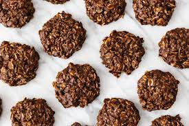

No-Bake Cookies

Description
Gooey peanut butter chocolate cookies that require no baking!
Ingredients:
- 2 cups sugar
- 1/2 cup milk
- 1 stick (8 tablespoons) unsalted butter
- 1/4 cup unsweetened cocoa powder
- 3 cups old-fashioned rolled oats
- 1 cup smooth peanut butter
- 1 table spoon pure vanilla extract
- Large pinch kosher salt
Directions:
- Line a baking sheet with wax paper or parchment.
- Bring the sugar, milk, butter and cocoa to a boil in a medium sauce pan over
medium heat, stirring occasionally, then let boil for 1 minute. Remove from the heat. Add the
oats, peanut butter, vanilla and salt, and stir to combine.
- Drop teaspoonfuls of the mixture onto the prepared baking sheet, and let
sit at room temperature until cooled and hardended, about 30 minutes.
Refrigerate in an airtight container for up to 3 days.